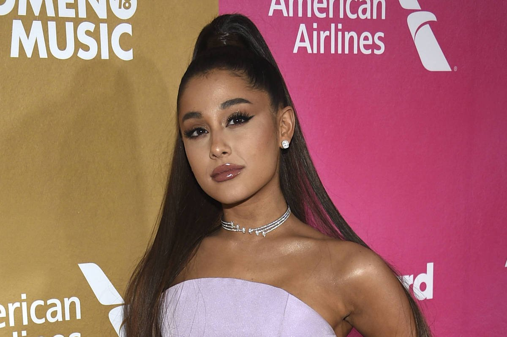
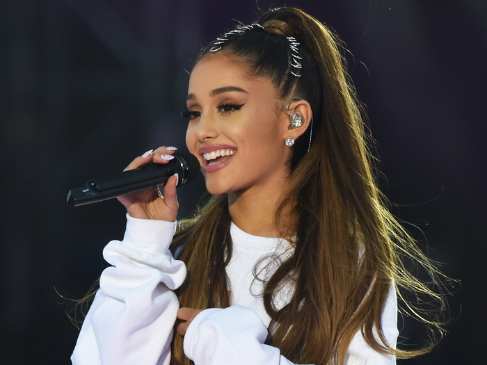
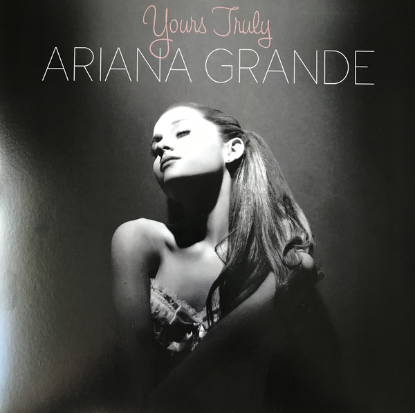

Vítejte na našich webových stránkách!
Zde se dozvíte základní informace o známé zpěvačce a
herečce Arianě Grande.
Najdete tu informace o jejím životě, albech, tours a další.

Život a kariéra
Ariana Grande se narodila 26. června 1993 v Boca Raton na Floridě. Její celé jméno je Ariana Grande-Butera. Už od malička zpívala.V roce 2008 vystupovala v muzikále 13. Hrála v seriálu Victorious na stanici Nickelodeon, jehož první epizoda se vysílala roku 2010, a také v Sam & Cat. Její první single se jmenuje "Put Your Hearts Up", který vyšel roku 2011. Její první debutové album Yours Truly vyšlo roku 2013 a pracovala na něm 3 roky. V roce 2013 se vydala na debutové koncertní turné The Listening Sessions. V roce 2015 se vydala na Honeymoon Tour, kde zpívala hlavně písně z alb Yours Truly a My Everything. Téhož roku si zahrála v horrorovém seriálu Scream Queens. Ariana miluje horrory a Halloween. V roce 2016 vyšlo album Dangerous Woman a o rok později se vydala na Dangerous Woman Tour. 22 května, po skončení koncertu v Manchestru, v aréně vybuchla bomba. 4 června se odehrál benefiční koncert One Love Manchester, pořádaný Arianou. V roce 2018 vydala album sweetener. O rok později se vydala na Sweetener World Tour, kde zpívala i písně z alba Thank U, next. V roce 2020 vzšlo album positions a roku 2021 se vdala. Její manžel se jmenuje Dalton Gomez. Alba
| Album | Datum vydání | Počet skladeb |
|---|---|---|
| Yours Truly | 2013 | 13 |
| My Everything | 2014 | 12 |
| Dangerous Woman | 2016 | 15 |
| Sweetener | 2018 | 15 |
| Thank U, Next | 2019 | 12 |
| Positions | 2020 | 14 |
